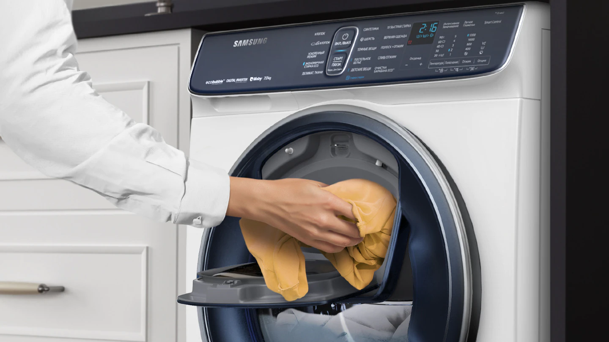
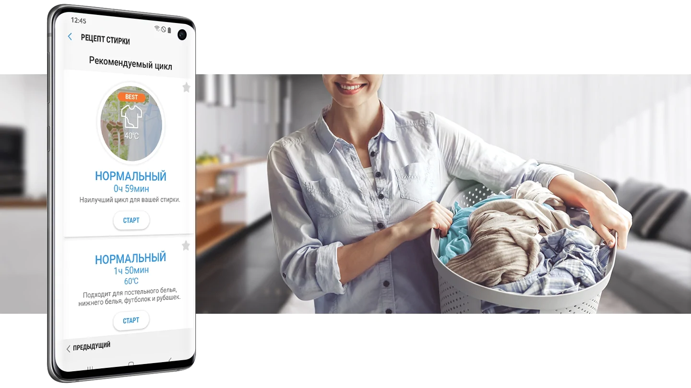
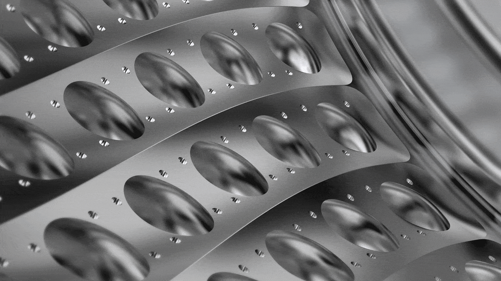
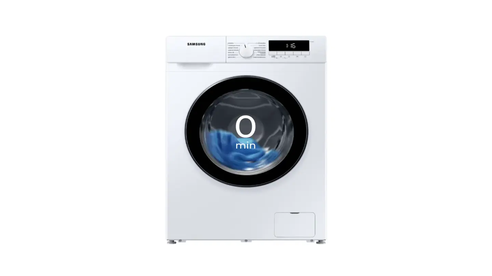
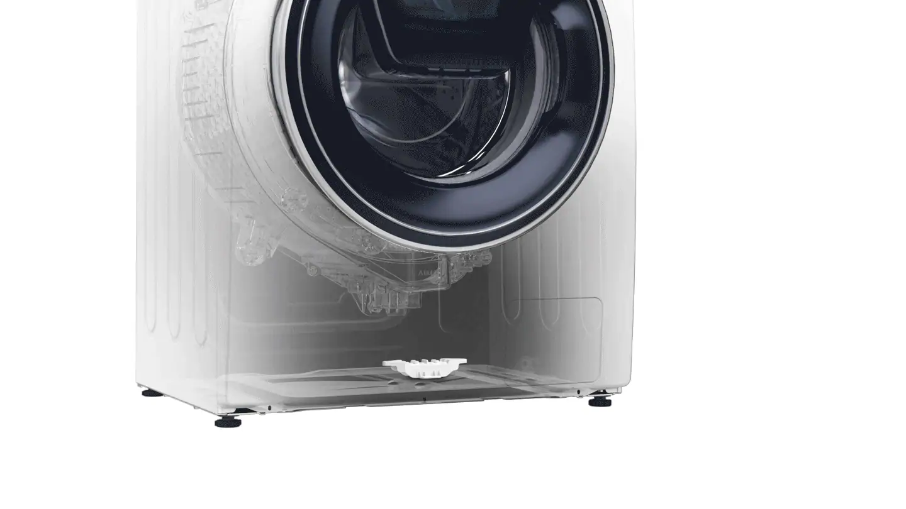
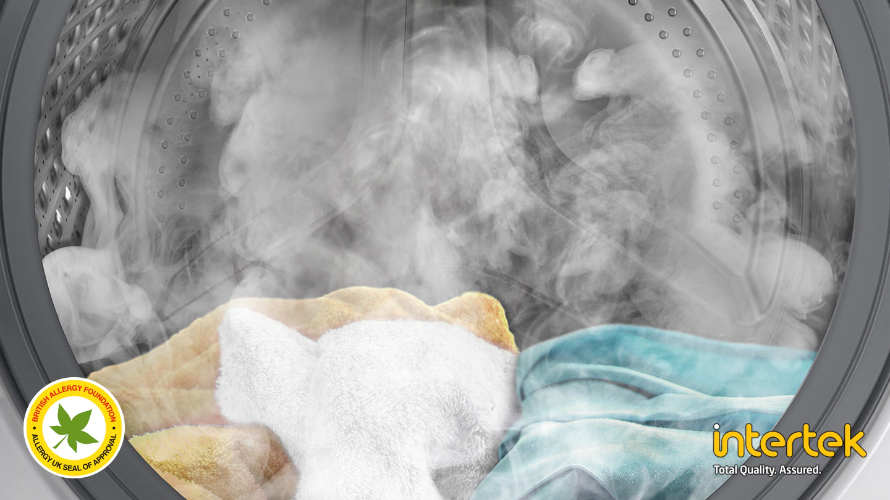
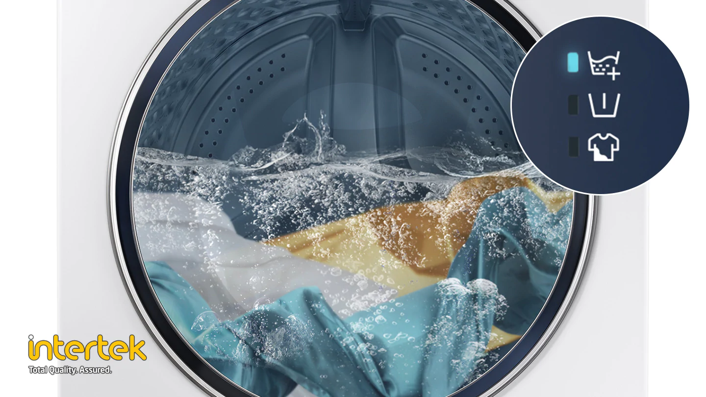

Добавьте любую вещь во
время стирки
AddWash™
Забыли рубашку? Дверца AddWash™ позволяет
поместить в барабан забытую одежду* , кондиционер или дополнительную порцию
стирального порошка даже после начала стирки** . Кроме того, вы легко можете
легко добавить вручную постиранную одежду, которую необходимо прополоскать или высушить.

* Добавить можно вещи из ткани, предметы одежды, моющие средства и кондиционеры.
** В целях безопасности дверца AddWash™ открывается при температуре воды в барабане не выше 50°C.
*** AddWash – ЭддВош
Искусственный интеллект
для лучшего качества стирки
Система искусственного интеллекта Bixby*
(на платформе приложения SmartThings** ) позволяет управлять процессом стирки в
удаленном режиме*** . Предустановленные варианты программ стирки, например,
Рецепт стирки рекомендует вам оптимальные циклы стирки**** , программа
Планировщик стирки помогает оптимизировать расписание стирки***** , а режим
Самодиагностики обеспечивает диагностику неисправностей в удаленном режиме.

* Bixby – Бигсби.
** SmartThings – СмартСингс.
*** Необходимо установить приложение Samsung SmartThings, доступное для смартфонов на ОС Android и iOS. Необходимо подключение к Wi-Fi сети.
**** Сохраняет пользовательские данные, пользовательские предпочтения для последующего формирования полезных рекомендаций владельцу машины.
***** Пользователь несет ответственность за все последствия несоблюдения правил эксплуатации машины, которые могут привести к повреждению машины или травме пользователя.
* Рекомендованный цикл стирки определяется только временем стирки, а не типом ткани или степенью загрязненности предметов одежды.
Эффективное удаление
загрязнений
Технология EcoBubble заботится о том, чтобы ваши вещи выглядели как новые.
Перед началом стирки специальный генератор создает пузырьки воздуха, растворяя моющее средство
в воде и превращая его в пену. Идеальная белоснежная пена быстро проникает в ткань,
обеспечивая не только эффективное, но и бережное удаление загрязнений.
Технология EcoBubble также значительно снижает механическое воздействие
стирального порошка на ткань, что позволит сохранить первоначальный вид ваших любимых вещей.

1. Испытания проводились по стандарту IEC 60456-2010 для загрузки 4 кг. в режиме стирки / режим стирки Super Eco
в холодной воде (в машине WF80F5E5U4W) и сравнивались с результатами стирки в режиме "Хлопок" при 40°С без технологии
EcoBubble (в машине WF0702WKU). В отдельных случаях результаты могут быть другими. 2. Данные основаны
на результатах лабораторных испытаний стирки EMPA образцов, проводимых компанией Springboard Engineering
при сравнении эффективности стирки с использованием обычного моющего раствора и "пузырьковой" технологии без механического воздействия.
3 EcoBubble - ЭкоБабл.
Быстрая и полноценная стирка
Ускоренный режим позволит вам сэкономить время
и добиться отличного результата стирки всего за 49 минут.
Благодаря двойной системе подачи воды сверху и снизу Ускоренный режим в сочетании с
генератором EcoBubble** эффективно отстирывает любые загрязнения.
При этом время полоскания также сокращается за счет дополнительной подачи воды прямо в
барабан, увеличение эффективности отжима происходит благодаря специальному вихревому рельефу
барабана Swirl+*** и увеличению скорости вращения барабана.

* При использовании программы Ускоренный режим с сохранением стандартных настроек и загрузкой барабана 4кг.
** EcoBubble - ЭкоБабл.
*** Swirl+ - Свирл+
Мгновенное предотвращение протечек
Датчик протечки воды AquaProtect
Защитите свой пол и дом от случайных повреждений
благодаря усовершенствованному датчику протечки воды.
Расположенный в нижней части стиральной машины, он обнаруживает даже небольшие следы воды,
он идентифицирует протечку по минимальному количеству воды.
В этом случае цикл сразу останавливается, машина откачивает воду и выдаёт уведомление на дисплей.

Гигиеническая чистота
Функция эко-очистки барабана
Поддерживайте гигиеническую чистоту вашей машины. Функция Eco Drum Clean устраняет
загрязнения и запахи, вызванные бактериями, образующимися на стенках барабана.
Вам не нужно использовать дорогостоящие моющие средства для чистки барабана,
поскольку чистка машины осуществляется с помощью сочетания смачивания,
пульсирующей струи и вращения барабана с большой скоростью. Стиральная машина
сама выводит на дисплей предупреждение о необходимости чистки барабана.

Гигиеническая чистота
Стирка паром
По-настоящему глубокая очистка с помощью пара.
Стирка паром улучшает качество чистки одежды без предварительной обработки.
Пар подается снизу в барабан благодаря чему одежда полностью пропитывается.
Пар удаляет частицы загрязнений и 99.9% бактерий и деактивирует аллергены*.

Тише и экономичнее
Инверторный мотор
Вы оцените сниженное энергопотребление, меньший уровень рабочего шума и большой рабочий ресурс.
В цифровом инверторном моторе используются мощные магниты, отсутствуют традиционные щетки, благодаря чему
обеспечивается бесшумность работы, повышается эффективность стирки и снижается энергопотребление по сравнению с универсальным мотором.
Этот электромотор отличается исключительно высокой долговечностью*, поэтому гарантийный срок его составляет 10 лет.

Эффективное удаление моющих средств
Режим Super Rinse+
Оцените улучшенный процесс ополаскивания белья после стирки.
Опция Super Rinse+ использует дополнительное количество воды и ускоренное вращение барабана,
благодаря чему обеспечивается более интенсивное удаление моющего средства из вашей одежды.
В результате одежда становится более чистой и не раздражает чувствительную кожу.
